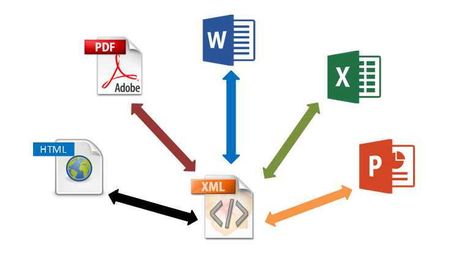
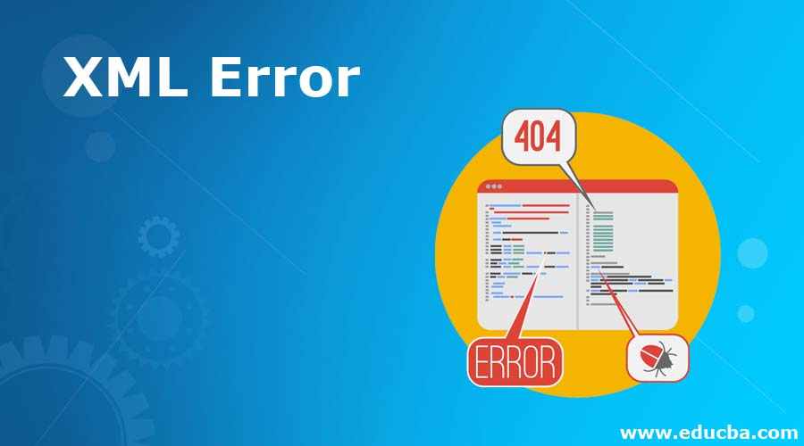

Artículo sobre XML
Historia:
XML fue desarrollado en la década de 1990 por un grupo de trabajo del World Wide Web Consortium (W3C). Fue diseñado como un formato de marcado que permite a los usuarios definir sus propias etiquetas y estructuras de datos, lo que lo hace altamente flexible y adaptable a una variedad de propósitos.
Normas de uso y sintaxis:
XML es un lenguaje de marcado que utiliza etiquetas para definir la estructura y el significado de los datos. Las etiquetas XML deben estar correctamente anidadas y cerradas. Los documentos XML pueden ser validados mediante DTD (Document Type Definition) o XSD (XML Schema Definition). XML es compatible con Unicode, lo que permite la representación de una amplia gama de caracteres.

Ventajas del XML
Es extensible: Después de diseñado y puesto en producción, es posible extender XML con la adición de nuevas etiquetas, de modo que se pueda continuar utilizando sin complicación alguna. El analizador es un componente estándar, no es necesario crear un analizador específico para cada versión de lenguaje XML. Esto posibilita el empleo de cualquiera de los analizadores disponibles. De esta manera se evitan bugs y se acelera el desarrollo de aplicaciones. Si un tercero decide usar un documento creado en XML, es sencillo entender su estructura y procesarla. Mejora la compatibilidad entre aplicaciones. Podemos comunicar aplicaciones de distintas plataformas, sin que importe el origen de los datos, es decir, podríamos tener una aplicación en Linux con una base de datos Postgres y comunicarla con otra aplicación en Windows y base de datos MS-SQL Server. Transformamos datos en información, pues se les añade un significado concreto y los asociamos a un contexto, con lo cual tenemos flexibilidad para estructurar documentos.
Críticas
XML y sus extensiones han sido regularmente criticadas por su nivel de detalle y complejidad.3 El mapeo del modelo de árbol básico de XML hacia los sistema de tipos de lenguajes de programación o bases de datos puede ser difícil, especialmente cuando se utiliza XML para el intercambio de datos altamente estructurados entre aplicaciones, lo que no era su objetivo primario de diseño. Otras críticas intentan refutar la afirmación de que XML es un lenguaje autodescriptivo4 (aunque la especificación XML no hace ninguna afirmación de este tipo). Se propone a JSON y YAML frecuentemente como alternativas, centrándose ambas en la representación de datos estructurados, en lugar de documentos narrativos.
